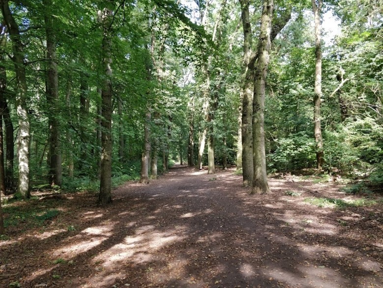
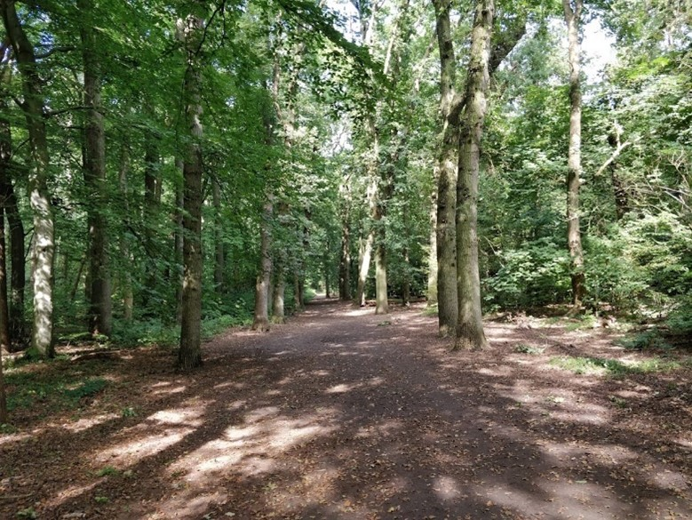

De Natuurwandelingen


Heilooërbos
Het heilooërbos ligt net als Heiloo op een strandwal die circa 4000 jaar geleden gevormd is. Aan beide zeiden van het bos bevinden zich weilanden. Het Heilooërbos maakt deel uit van het landgoed Nijenburg, en was oorspronkelijk opgericht door de heren Van Egmond van de Nijenbrug. Later tijdens het beheer van Conrnelis van Foreest vond grote bebossing plaats. De reden hiervoor was vooral voor houtproductie. Ook is hier de kattenberg te vinden, de kattenberg is een opvallende heuvel met een grote en oude lindeboom er bovenop. Men vermoed dat de kattenberg kunstmatig is en misschien uit de late middeleeuwen dateert. Wanneer het precies gemaakt was (als het al kunstmatig van origine is) weet men niet, ook de functie ervan is niet bekend.


Geesmerambacht
Het recreatiegebied Geestmerambacht ligt aan de westelijke zijde van de gemeente Dijk en Waard in de provincie van Noord-Holland. Het gebied is aangelegd rond de ‘Zomerdel’ wat een groot meer is dat wordt omringd door weilanden en bossen. Het gebied is ongeveer 200 hectare groot, waarvan 40 hectare bos gevuld is met wandel- en fietspaden en 75 hectare water dat voldoet aan de voorwaarde om van zwemkwaliteit te zijn. Er zijn onder anderen jaarlijks terugkerende festivals als het Indian Summer Festival en Liquicity. De aanleg van het Geestmerambacht vond plaats in 1960 in het kader van ruilverkaveling. Ruilverkaveling is het ruilen van kavels, wat stukken grond zijn met een bepaalde vorm vaak omringd door duidelijke grenzen zoals heggen of sloten. Ook wilde men hier zand winnen. Het recreatiegebied van het Geestmerambacht ligt daar middenin.

 
